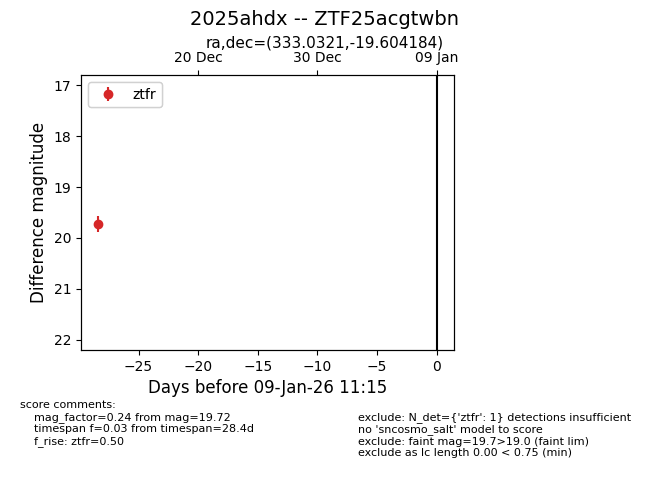
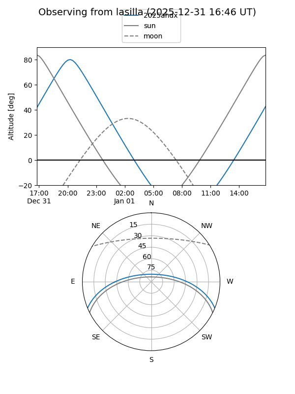
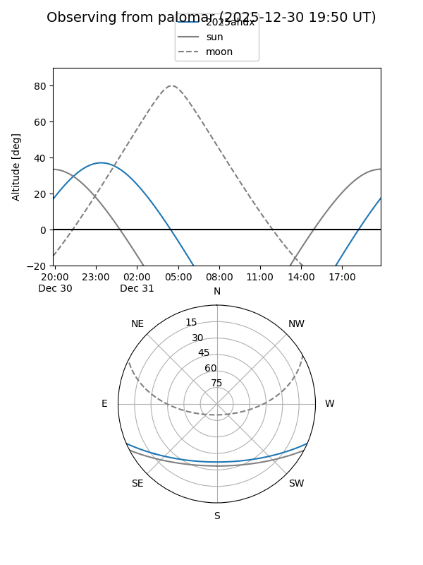

2025ahdx
Target 2025ahdx at 2025-12-18 11:18
Aliases and brokers:
FINK: fink-portal.org/ZTF25acgtwbn
Lasair: lasair-ztf.lsst.ac.uk/objects/ZTF25acgtwbn
ALeRCE: alerce.online/object/ZTF25acgtwbn
TNS: wis-tns.org/object/2025ahdx
YSE: ziggy.ucolick.org/yse/transient_detail/2025ahdx
alt names
ZTF25acgtwbn (ztf,fink_ztf)
2025ahdx (tns,yse)
Coordinates:
equatorial (ra, dec) = 333.0321,-19.60418
equatorial (HMS+DMS) = 22:12:07.71,-19:36:15.06
galactic (l, b) = (35.8994,-52.83159)
Photometry
last ztfr=19.72
1 ztfr detections
Lightcurve

Visibility


Additional plots